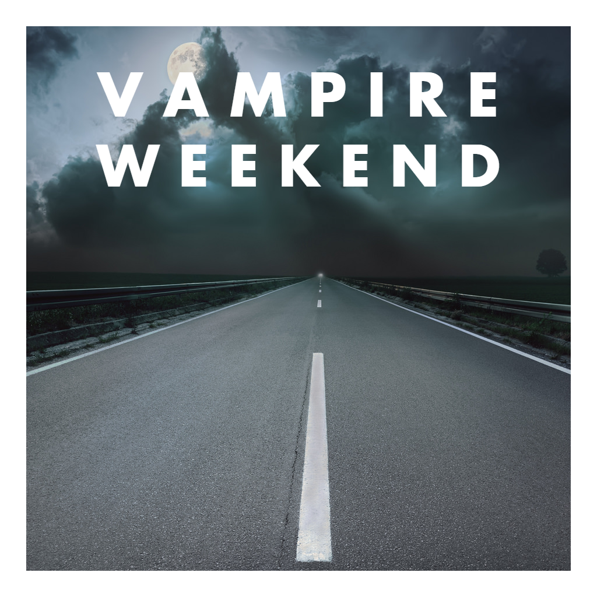
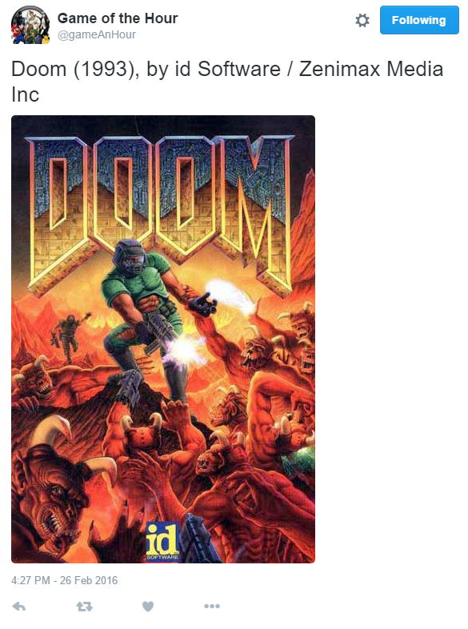

Here you'll find a list of projects that I've created on my own or contributed towards. They range from simple web applications to video games to automated twitter accounts.

I thought the album art of Kanye West's The Life of Pablo was hilarious, so naturally I had to make a tool that let me make my own stupid fake album covers.
This web app was written in pure JavaScript and utilizes HTML5's Canvas element to render the image.
The Quaking Floor was a video game developed by myself and two others for the undergraduate course 'Introduction to Game Development.'
It was written in 100% pure Java and runs on Windows, Mac, and Linux.

This was made shortly after The Life of Pablo album art generator. Vampire Weekend (one of my favorite bands), has a certain motif to the styling of their album covers.
I decided to program that motif.
UTPB AR was my senior research project. It is an application developed for the Android operating system that uses AR (augmented reality) to display information about the campus to the user.
It was written in Java, HTML, CSS, JavaScript, XML, and JSON.

Game of the Hour is an automated twitter account that posts a completely random video game every 24 hours.
The bot is written in Python and makes use of the Giant Bomb Wiki and Tweepy, a Python wrapper for the Twitter API.
Since it was launched late 2015, it has exhibited 0% downtime.